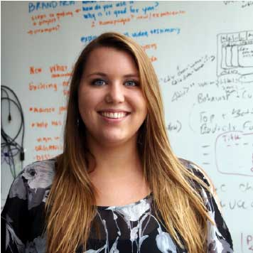

Home
About us
Our Work
Our Team
News
Jobs
Donate
Our Team
Alex Schiller
Intern | Infrastructure
Andrew Sallans
Partnerships, Collaborations, & Funding Manager | Community
Austin Macdonald
Intern | Infrastructure
Azeem Mufti
Intern | Infrastructure
Brian Geiger
Developer | Infrastructure
Brian Nosek
Co-founder
Cailey Fitzgerald
Intern | Infrastructure
Caner Uguz
Developer | Infrastructure

Casey Rollins
Intern | Infrastructure
Chris Bischak
Intern | Infrastructure
Chris Seto
Junior Developer | Infrastructure
Denise Holman
Office Manager & Events Coordinator | Community
Erica Baranksi
Intern | Infrastructure
Erin Braswell
Project Coordinator/Developer | Community, Infrastructure
Fabian von Feilitzsch
Intern | Infrastructure
Faye Huynh
Intern | Infrastructure
Harry Rybacki
Intern | Infrastructure
Jake Rosenberg
Intern | Infrastructure
Jeff Spies
Co-founder
Jim Witschey
Intern | Infrastructure
Johanna Cohoon
Project Coordinator | Metascience
Josh Carp
Developer | Infrastructure
Kurtis Jungersen
Intern | Infrastructure
Lauren Revere
Intern | Infrastructure
Lyndsy Simon
Developer | Infrastructure
Mallory Kidwell
Project Coordinator | Metascience
Michael Lapuz
Intern | Infrastructure
Michelle Yao
Intern | Infrastructure
Nan Chen
Developer | Infrastructure
Natasha Richter
Intern | Community
Patrick Ryan
Intern | Infrastructure
Peter Fan
Intern | Infrastructure
Robert Amanfu
Volunteer | Infrastructure
Robert Liebowitz
Intern | Infrastructure
Sam Chrisinger
Intern | Infrastructure
Sam Portnow
Volunteer | Infrastructure
Sara Bowman
Project Manager | Community
Saul Brodsky
Intern | Infrastructure
Saman Ehsan
Intern | Infrastructure
Steve Loria
Developer | Infrastructure
Tanesha Hudson
Intern | Infrastructure
Tim Errington
Project Manager | Metascience
Wendy Zhu
Volunteer | Infrastructure
Xander Herrick
Intern | Infrastructure


 This work is licensed under a Creative Commons Attribution-NonCommercial 3.0 Unported License.
This work is licensed under a Creative Commons Attribution-NonCommercial 3.0 Unported License.